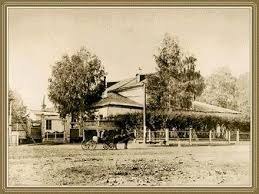

Introduction
 Ilyich Tchaikovsky was a pioneering Russian composer, born on May 7, 1840, and widely regarded as one of the most influential and beloved composers
of the Romantic period. His compositions are known for their sweeping melodies, emotional depth, and dramatic intensity, capturing the spirit of Russian culture
and music while embracing European musical traditions. Tchaikovsky’s works continue to be celebrated worldwide, with pieces like The Nutcracker, Swan Lake, Sleeping
Beauty, and 1812 Overture being some of the most frequently performed classical compositions.Pyotr Ilyich Tchaikovsky (1840–1893) is one of the most famous composers of the Romantic era. Known for his incredible ability to evoke emotion, his works include masterpieces like *Swan Lake*, *The Nutcracker*, and *1812 Overture*.
Ilyich Tchaikovsky was a pioneering Russian composer, born on May 7, 1840, and widely regarded as one of the most influential and beloved composers
of the Romantic period. His compositions are known for their sweeping melodies, emotional depth, and dramatic intensity, capturing the spirit of Russian culture
and music while embracing European musical traditions. Tchaikovsky’s works continue to be celebrated worldwide, with pieces like The Nutcracker, Swan Lake, Sleeping
Beauty, and 1812 Overture being some of the most frequently performed classical compositions.Pyotr Ilyich Tchaikovsky (1840–1893) is one of the most famous composers of the Romantic era. Known for his incredible ability to evoke emotion, his works include masterpieces like *Swan Lake*, *The Nutcracker*, and *1812 Overture*.
His Live
Tchaikovsky was born in Votkinsk, Russia, and began showing musical promise at a young age. Despite his talent, his parents initially encouraged him to pursue a career in law, which led him to work as a clerk in the Ministry of Justice in St. Petersburg. However, his passion for music remained strong, and he eventually enrolled at the newly established St. Petersburg Conservatory, where he received a formal education in music. Under the tutelage of Anton Rubinstein, Tchaikovsky developed his unique style and compositional skills.After graduating, Tchaikovsky became a professor at the Moscow Conservatory, a position that provided financial stability and allowed him to focus on his compositions. During his career, he wrote across many genres, including symphonies, ballets, operas, concertos, and chamber music.SEO and Structure
The content of this page is optimized for search engines with relevant keywords such as "Tchaikovsky," "classical music," and "composer." Using semantic headings and meta descriptions helps search engines understand the page content. Images are properly titled and accompanied by descriptive alt text to ensure accessibility and better indexing.